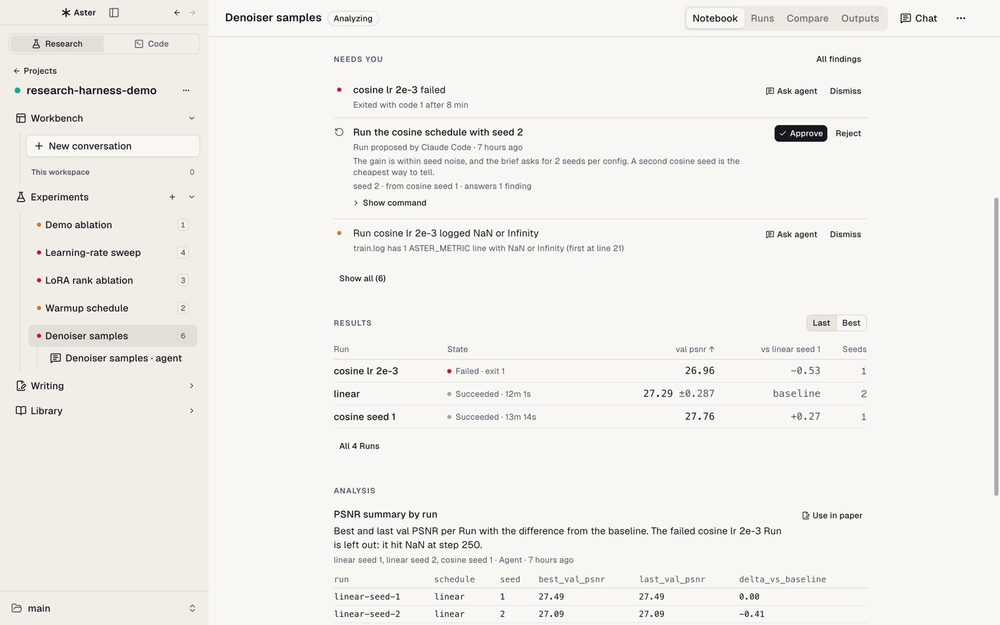

01
Experiment notebook
Each Experiment opens on a notebook: the plan (question, metric, baseline, seeds), Needs you (failed Runs, proposals, and findings waiting on a decision), results with mean ± spread per configuration, analyses, and your conclusion.
The Experiment agent is docked beside it and can design, analyze, explain a failure, or propose the next Run.
